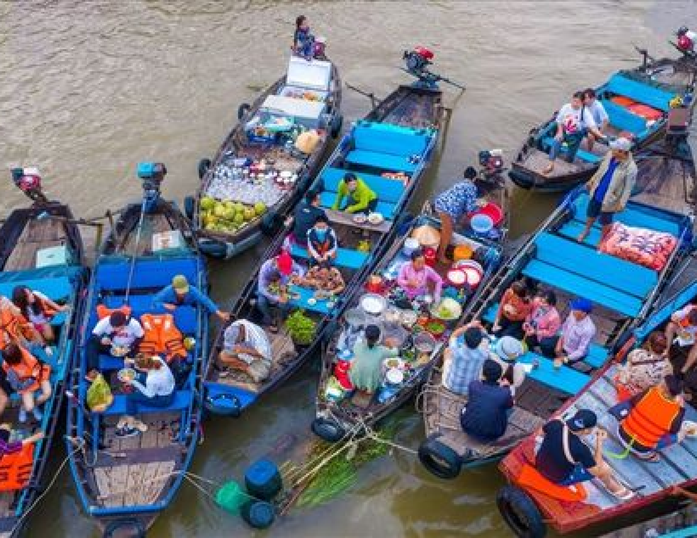
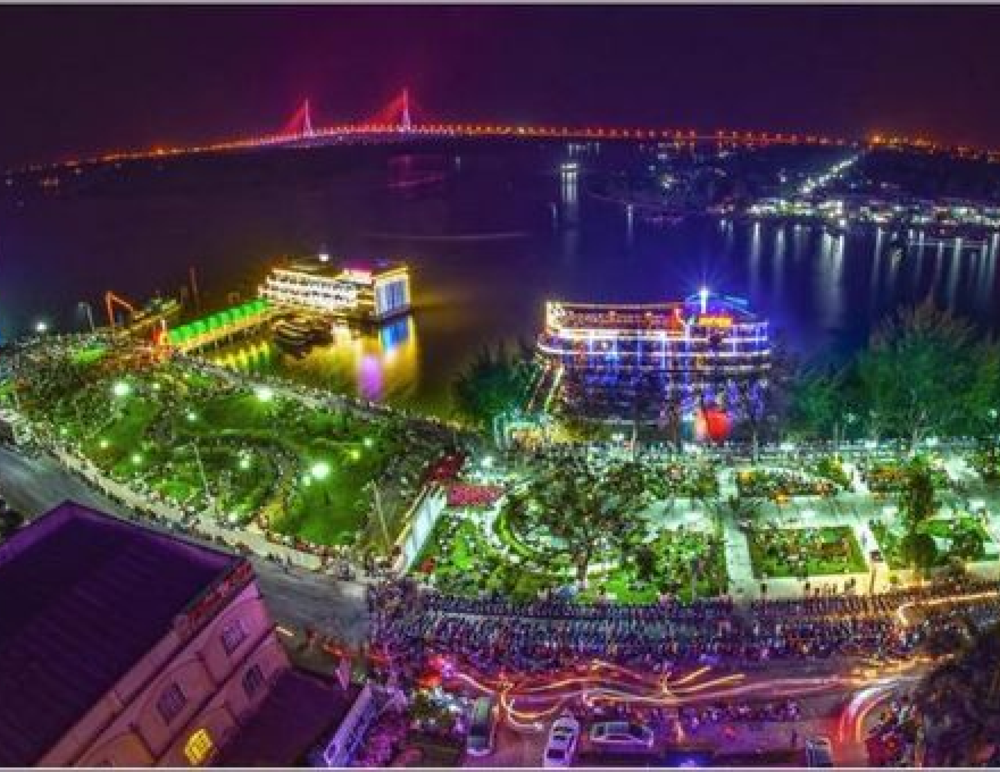
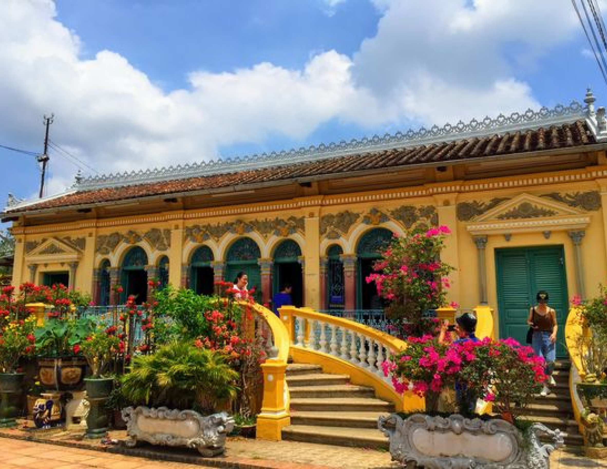

CAN THO
CAN THO
Can Tho, located in the Mekong Delta region of southern Vietnam, is renowned for its vibrant floating markets, lush landscapes, and rich cultural heritage. As the largest city in the Mekong Delta, Can Tho offers a unique glimpse into traditional Vietnamese life with its bustling riverside markets and charming rural scenery. Visitors can explore the bustling Cai Rang Floating Market, cruise along the scenic waterways, and experience the local cuisine and hospitality. Can Tho provides a perfect blend of natural beauty and cultural experiences in the heart of the Delta.
UNMISSABLE ATTRACTIONS

Cai Rang Floating Market
Cai Rang Floating Market, in Can Tho, is one of Vietnam’s most vibrant markets. Boats filled with
fresh produce, local goods, and snacks create a lively scene on the water. Visitors can experience
boat trading, taste local foods, and see the traditional way of life in the Mekong Delta. It’s a
must-visit for a glimpse into the region’s culture.
Adress:
Cai Rang District, Can Tho City, Vietnam. Accessible by boat from Can Tho City.
Ninh Kieu Wharf
Ninh Kieu Wharf, in Can Tho City, is a lively waterfront known for its scenic views of the Hau
River. A hub for boat tours and river cruises, it offers visitors a chance to explore vibrant river
life and enjoy stunning sunsets. With promenades, markets, and local eateries, it’s a popular spot
for relaxation and cultural immersion.
Adress:
Ninh Kieu Wharf, Can Tho City, Vietnam.


Binh Thuy Ancient House
Binh Thuy Ancient House, in Can Tho City, is a beautifully preserved example of traditional Southern
Vietnamese architecture. Over a century old, it combines intricate wooden carvings with French
colonial design. Visitors can explore elegant rooms and decor, reflecting the region's rich cultural
heritage and history.
Adress:
144B Binh Thuy, Can Tho City, Vietnam.
HIDDEN GEMS OF HANOI

CAN THO - SAI GON - MY THO - BEN TRE - CAN THO - CHO NOI - CON SON
2 days
Availability : Every day
1 people